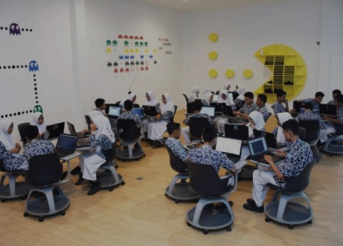
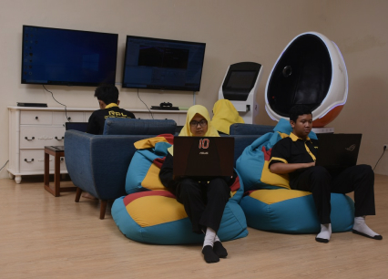
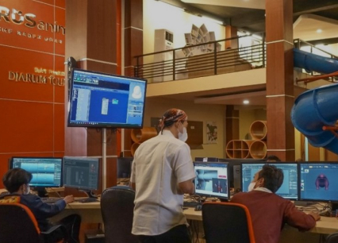

MengenalBersosialisasi

Kenapa
Bersosialisasi?
sosialisasi adalah suatu proses interaksi dan pembelajaran yang dilakukan seorang manusia sejak lahir hingga akhir hayatnya di dalam suatu budaya masyarakat. Sedangkan, pengertian sosialisasi secara sempit berarti sebuah proses pembelajaran dari manusia
agar dapat mengenali lingkungan yang kelak akan ia hidupi, baik lingkungan fisik ataupun sosial.
Dengan adanya proses sosialisasi, maka seseorang bisa mengetahui, memahami sekaligus menjalankan hak dan kewajibannya berdasarkan peran status masing-masing sesuai budaya masyarakat. Selanjutnya, dalam proses pengenalan hak dan
kewajiban seorang manusia dewasa, setiap individu atau manusia perlu melakukan sosialisasi untuk mempelajari dan mengembangkan pola-pola perilaku sosial bersama anggota masyarakat lainnya.
Proses Dalam Bersosialisasi
Pada proses sosialisasi terdapat juga hal yang membentuk kepribadian manusia atau pun dirimu, berikut ada tiga proses sosialisasi yang perlu kamu ketahui:
01
Internalisasi nilai-nilai
Proses penanaman dan pembiasaan nilai dan norma sosial ke dalam diri individu yang berlangsung sejak lahir hingga meninggal.
02
Enkulturasi
Proses pengembangan yang berasal dari nilai-nilai budaya yang sudah tertanam dalam diri seseorang dan menjadi kebiasaan dalam perilaku sehari-hari.
03
Pendewasaan diri
Proses ini merupakan penggabungan dari belangsungnya proses internalisasi dan enkulturasi. Proses ini bisa dikata kan sudah memasuki fase dewasa dan siap memegang tanggung jawab
Point penting dalam bersosialisasi

First Impression
First impression adalah cara penilaian orang lain terhadap diri kita saat pertama kali berkenalan. First impression atau kesan pertama sangat penting untuk membranding dirimu di mata orang yang baru dikenal. Walaupun dengan first impression ini, tak semua orang bisa mendapat hati orang yang baru dikenal.

Attitude
Attitude merupakan hal yang sangat penting untuk diri terutama ketika dalam bertemu seseorang agar orang yang kamu temui tidak merasa ilfeel atau tidak nyaman terhadap diri kamu.

Membawa diri
Dengan pembawaan yang baik kamu akan terlihat sebagai dirimu sendiri yang unik. Seperti halnya ketika kamu melakukan komunikasi dengan lawan bicara, pembawaanmu yang alami tanpa dibuat-buat akan mampu meyakinkan orang lain.

jangan terlalu takut
Takut dikomentari orang merupakan hal yang wajar yang bisa dirasakan semua orang karena adanya ekspektasi yang dijadikan standar.
Tips dan Trick saat bersosialisasi
Setelah kita mengenal point penting saat bersosialisasi, Selanjutnya Kita akan belajar tentang Tips dan Trick saat bersosialisasi
Jelajahi lingkungan baru dan bertemu orang baru.
Berhenti Membandingkan Diri dengan Orang Lain.
Memiliki Target Dan Impian.
Jangan Hidup untuk Menyenangkan Orang Lain.
Percaya Jika kamu Sudah Lebih Baik.
Mengenali Kelebihan akan Diri Sendiri.
Fokus pada Kebahagiaan Dirimu.
Tidak Membandingkan Diri Sendiri.
Fokus pada Hal Positif.
Fokus pada tujuan.
Ekspresikan Gayamu Sendiri.
Cintai apa yang kamu kerjakan.
Masih Ragu Untuk Bersosialisasi?
Coba luangkan waktu mu sejenak untuk meyakinkan dirimu bahwa bersosialisasi itu bukan suatu hal yang buruk

"Jangan biarkan opini orang lain menenggelamkan suara dari dalam dirimu. "
- Steve Jobs -